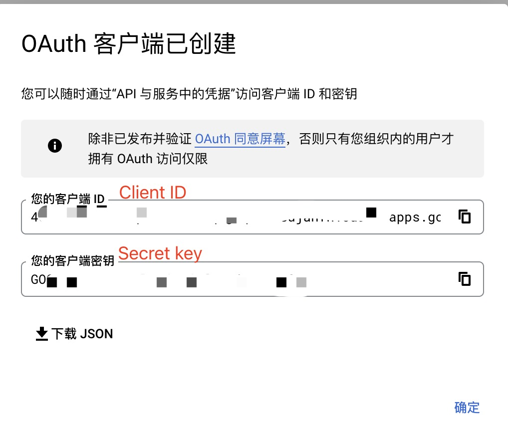
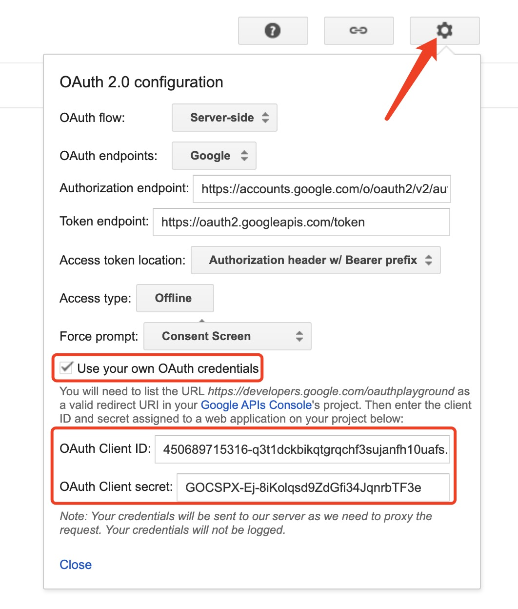
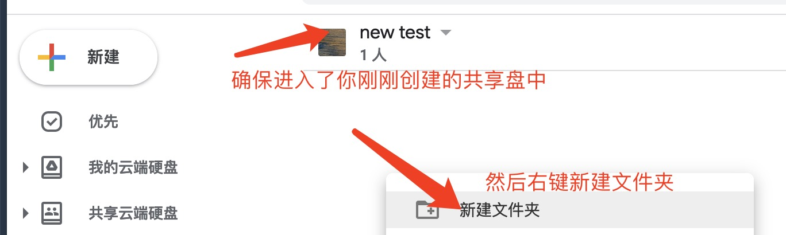

User Type选择 "内部"，点击创建
| 表单项 | 值 |
|---|---|
| 应用名称 | 建议 GD-example.com（更换为当前Google账号） |
| 用户支持电子邮件 | 选择当前帐号 |
| 开发者联系信息 | 输入当前账号 |
| 表单项 | 值 |
|---|---|
| 应用类型 | Web应用 |
| 名称 | 随意填写，默认名称也可 |
| 已获授权的 JavaScript 来源 | 留空 |
| 已获授权的重定向 URI | https://developers.google.com/oauthplayground |
Client ID 与 Secret key

Client ID 与 Secret key

输入后，点击"Close"按钮
记下 Refresh token
upload

17phBQbZmNCjyYeAbYh284A0_nyt57ayB，大家根据自己地址栏的值修改即可。
记下这一串代码，即为下文要用到的Root folder
| 表单项 | 值 |
|---|---|
| Bucket name | 之前记下的->Client ID |
| Access key | 之前记下的->Refresh token |
| Secret key | 之前记下的->客户端密码 |
| Root folder | 之前记下的->路径参数 |
| 是否激活 | 是 |
| 失效时间 | 默认，不修改 |